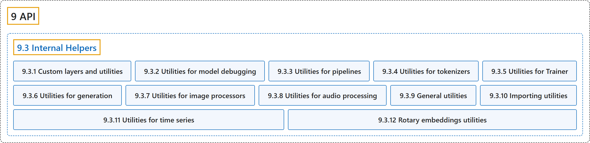

9.3 Internal Helpers
Classification

Glossary
| Term | Definition | 中文翻译 | Source |
|---|---|---|---|
| 9.3 Internal Helpers 内部辅助工具 |
(context) "This page lists all the custom layers used by the library, as well as the utility functions and classes it provides for modeling. Most of those are only useful if you are studying the code of the models in the library." | （语境）本页列出库中使用的所有自定义层，以及它为建模提供的工具函数和类。其中大多数只在你研究库中模型的代码时才有用。 | Hugging Face, n.d., "Custom layers and utilities", para. 1 |
| 9.3.1 Custom layers and utilities 自定义层与工具 |
(context) "This page lists all the custom layers used by the library, as well as the utility functions and classes it provides for modeling." | （语境）本页列出库中使用的所有自定义层，以及它为建模提供的工具函数和类。 | Hugging Face, n.d., "Custom layers and utilities", para. 1 |
| 9.3.2 Utilities for model debugging 模型调试工具 |
(context) "This page lists all the debugging and model adding tools used by the library, as well as the utility functions it provides for it." | （语境）本页列出库中使用的所有调试工具和添加模型的工具，以及它为此提供的工具函数。 | Hugging Face, n.d., "Model debugging toolboxes", para. 1 |
| 9.3.3 Utilities for pipelines 管道工具 |
(context) "This page lists all the utility functions the library provides for pipelines." | （语境）本页列出库为管道提供的所有工具函数。 | Hugging Face, n.d., "Utilities for pipelines", para. 1 |
| 9.3.4 Utilities for tokenizers 分词器工具 |
(context) "This page lists all the utility functions used by the tokenizers, mainly the class PreTrainedTokenizerBase that implements the common methods between PreTrainedTokenizer and PreTrainedTokenizerFast." | （语境）本页列出分词器使用的所有工具函数，主要是 PreTrainedTokenizerBase 类，它实现了 PreTrainedTokenizer 和 PreTrainedTokenizerFast 共有的方法。 | Hugging Face, n.d., "Utilities for tokenizers", para. 1 |
| 9.3.5 Utilities for Trainer Trainer 工具 |
(context) "This page lists all the utility functions used by Trainer." | （语境）本页列出 Trainer 使用的所有工具函数。 | Hugging Face, n.d., "Utilities for Trainer", para. 1 |
| 9.3.6 Utilities for generation 生成工具 |
(context) "This page lists all the utility functions used by generate()." | （语境）本页列出 generate() 使用的所有工具函数。 | Hugging Face, n.d., "Utilities for generation", para. 1 |
| 9.3.7 Utilities for image processors 图像处理器工具 |
(context) "This page lists all the utility functions used by the image processors, mainly the functional transformations used to process the images." | （语境）本页列出图像处理器使用的所有工具函数，主要是处理图像所用的函数式变换。 | Hugging Face, n.d., "Utilities for image processors", para. 1 |
| 9.3.8 Utilities for audio processing 音频处理工具 |
(context) "This page lists all the utility functions that can be used by the audio FeatureExtractor in order to compute special features from a raw audio using common algorithms such as Short Time Fourier Transform or log mel spectrogram." | （语境）本页列出音频 FeatureExtractor 可用来从原始音频计算特殊特征的所有工具函数，用的是短时傅里叶变换或对数梅尔频谱图等常见算法。 | Hugging Face, n.d., "Utilities for FeatureExtractors", para. 1 |
| 9.3.9 General utilities 通用工具 |
(context) "This page lists all of Transformers general utility functions that are found in the file utils.py." |
（语境）本页列出 Transformers 中位于 utils.py 文件里的所有通用工具函数。 |
Hugging Face, n.d., "General utilities", para. 1 |
| 9.3.10 Importing utilities 导入工具 |
(context) "This page goes through the transformers utilities to enable lazy and fast object import." | （语境）本页介绍 transformers 中用于实现对象延迟导入和快速导入的工具。 | Hugging Face, n.d., "Importing utilities", para. 1 |
| 9.3.11 Utilities for time series 时间序列工具 |
(context) "This page lists all the utility functions and classes that can be used for Time Series based models." | （语境）本页列出可用于时间序列模型的所有工具函数和类。 | Hugging Face, n.d., "Utilities for time series", para. 1 |
| 9.3.12 Rotary embeddings utilities 旋转位置嵌入工具 |
(context) "This page explains how the Rotary Embedding is computed and applied in Transformers and what types of RoPE are supported." | （语境）本页说明 Transformers 中旋转位置嵌入如何计算和应用，以及支持哪些类型的 RoPE。 | Hugging Face, n.d., "Rotary embeddings utilities", para. 1 |
References
Hugging Face. (n.d.). Transformers documentation (Version 5.20.2). Retrieved October 30, 2026, from https://huggingface.co/docs/transformers/v5.20.2/en/index